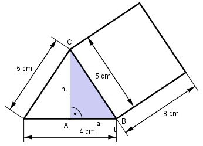

Aufgabe 56 Berechnen Sie das Volumen V und die Oberfläche O des dargestellten Prismas.  Es ist ein Prisma mit einem gleichschenkligen Dreieck als Grundfläche G. V = G * h Wegen Symmetrie: 4 cm a = ------ = 2 cm 2 Satz von Pythagoras im Dreieck ABC: 5² = a² + h1² 5² = 2² + h1² |-2² 5² - 2² = h1² h1² = 21 | √ h1 = 4,58 cm 4 cm * 4,58 cm G = ---------------- cm = 9,16 cm² 2 V = 9,16 cm² * 8 cm = 73,3 cm³ O = 2 * G + M = 2 * G + U * h O = 2 * 9,16 cm² + (4 cm + 2 * 5 cm) * 8 cm O = 18,32 cm² + 112 cm² = 130,3 cm²